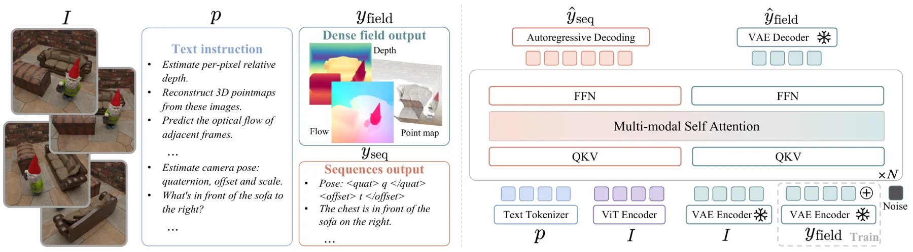
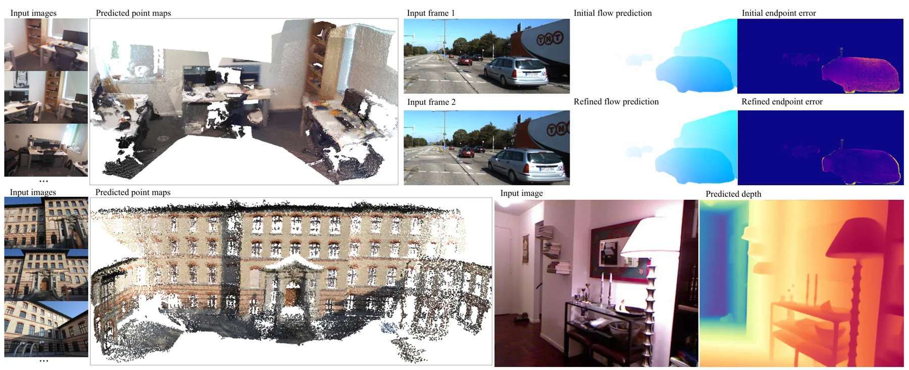
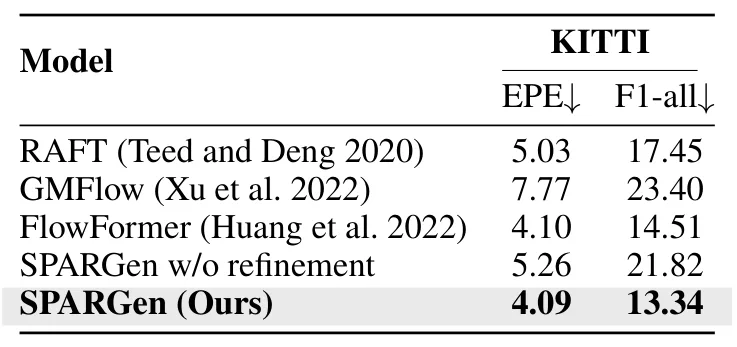
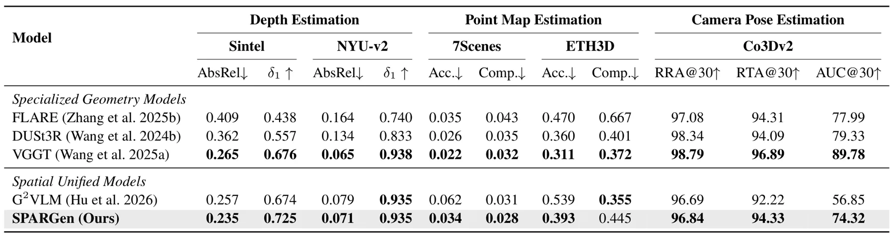
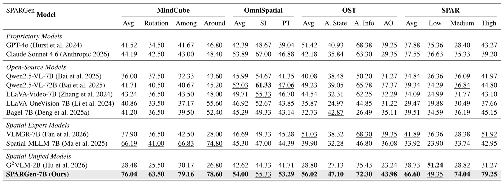
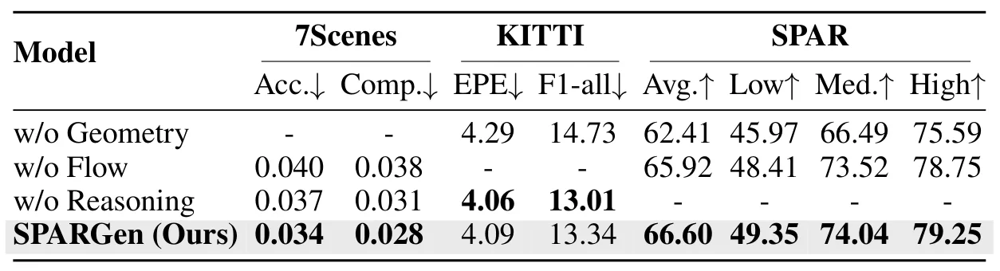

SPARGen：以原生多模态生成统一空间感知与推理SPARGen: Unifying Spatial Perception and Reasoning through Native Multimodal Generation
统一几何感知、对应和语言推理的设定具有前沿价值，可能成为通用三维前端；但摘要未给出具体 benchmark、数值、实时性及度量尺度说明，与可部署 SLAM/GNSS 融合仍有距离。
一句话工作总结
把三维重建、稠密对应和空间关系推理统一成指令驱动的多模态生成任务，以共享空间表征促进能力迁移。
摘要
SPARGen 将三维重建、稠密对应和空间推理统一表述为指令条件生成任务。框架把紧凑的结构化输出和语言输出序列化为 token，同时以图像对齐形式生成稠密几何场，使多种空间监督能够共同塑造同一个原生多模态生成模型中的共享表示。作者称该统一框架在三维重建、对应和空间推理等异构 benchmark 上均取得有竞争力的表现，避免为每项能力分别使用任务专用架构或外部几何模块。
Spatial perception and reasoning from visual observations require recovering geometric structure, establishing correspondences, and understanding spatial relations. Existing approaches typically address these capabilities separately using task-specific architectures or external geometric modules, limiting knowledge transfer among complementary representations of the same physical scene. We introduce SPARGen, a unified multimodal framework that casts 3D reconstruction, dense correspondence, and spatial reasoning as instruction-conditioned generation tasks. SPARGen serializes compact structured and linguistic outputs as token sequences while generating dense geometric fields in image-aligned forms, enabling spatial supervision to jointly shape shared representations within a native multimodal generative model. Experiments across benchmarks for 3D reconstruction, correspondence, and spatial reasoning show that SPARGen achieves competitive performance across heterogeneous spatial tasks within a single native multimodal generative framework.
中文解读摘录
- 论文：arXiv:2608.14138 · PDF
- 作者：Jinsheng Quan, Jianhua Li, Siyi Xie, Xuanke Shi, Kewang Deng, Zukai Chen, Feifei Shao, Lei Yang
- 核心方法：将三维重建、稠密对应和空间推理都转换为指令条件生成；结构与语言输出序列化为 token，稠密几何场则保持图像对齐，使异构空间监督共享模型表征。
- 判断：统一范式值得关注，尤其是对应与重建互相迁移的潜力；但摘要缺少具体数据集、数字结果、实时性和尺度定义，离 SLAM 后端或 GNSS 融合部署尚远。
- 评分：7.7/10。
图表/页面预览

{kind=link}

{kind=link}

{kind=link}

{kind=link}

{kind=link}

{kind=link}
